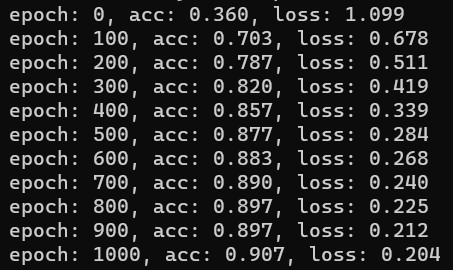

Example 1
Click here to view the PPT
Training basic models
import numpy as np
import nnfs
from nnfs.datasets import spiral_data
from nnl import bundle as nn
nnfs.init()
# Create dataset
X, y = spiral_data(samples=100, classes=3)
# Create Dense layer with 2 input features and 64 output values
dense1 = nn.layer_dense(2, 64)
# Create ReLU activation (to be used with Dense layer):
activation1 = nn.relu()
# Create second Dense layer with 64 input features (as we take output
# of previous layer here) and 3 output values (output values)
dense2 = nn.layer_dense(64, 3)
# Create Softmax classifier's combined loss and activation
loss_activation = nn.activation_softmax_loss_categoricalCrossentropy()
# Create optimizer
optimizer = nn.optimizer_adam(learning_rate=0.1, decay=1e-7)
# Train in loop
for epoch in range(10001):
# Perform a forward pass of our training data through this layer
dense1.forward(X)
# Perform a forward pass through activation function
# takes the output of first dense layer here
activation1.forward(dense1.output)
# Perform a forward pass through second Dense layer
# takes outputs of activation function of first layer as inputs
dense2.forward(activation1.output)
# Perform a forward pass through the activation/loss function
# takes the output of second dense layer here and returns loss
loss = loss_activation.forward(dense2.output, y)
# Calculate accuracy from output of activation2 and targets
# calculate values along first axis
predictions = np.argmax(loss_activation.output, axis=1)
if len(y.shape) == 2:
y = np.argmax(y, axis=1)
accuracy = np.mean(predictions==y)
if not epoch % 100:
print(f'epoch: {epoch}, ' +
f'acc: {accuracy:.3f}, ' +
f'loss: {loss:.3f}')
# Backward pass
loss_activation.backward(loss_activation.output, y)
dense2.backward(loss_activation.dinputs)
activation1.backward(dense2.dinputs)
dense1.backward(activation1.dinputs)
# Update weights and biases
optimizer.pre_update_params()
optimizer.update_params(dense1)
optimizer.update_params(dense2)
optimizer.post_update_params()
Output of the code:
